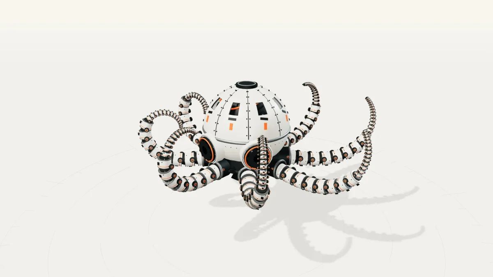
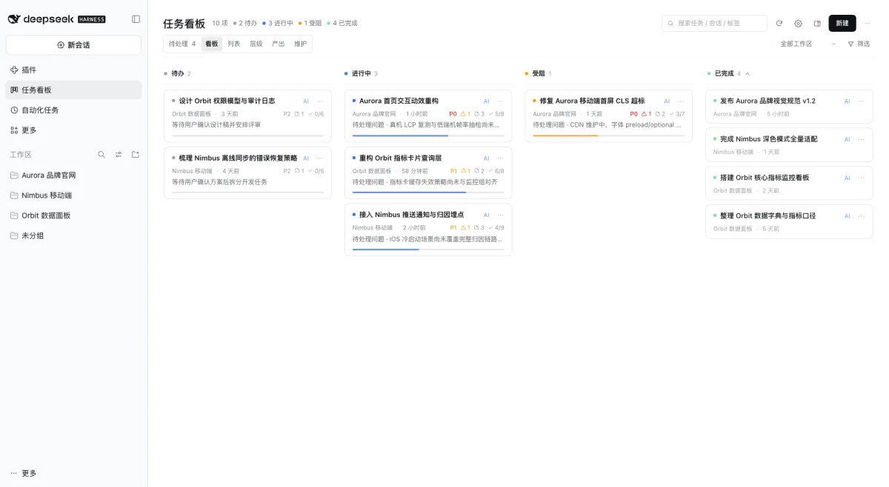

开源代表作

Agent 技能 · 跨工具记忆
topmind-handoff
把工作偏好、项目上下文与记忆留在自己的私有 Git 仓库。本机编译共享与场景视图，也能导出 Markdown 交接包，带到其他 AI 工具。
- Git私有仓库
- 本机编译共享与场景视图
- Markdown便携交接包
GROK BOTS
X Pulse
用可交互的时间表盘，回放自己的 X 动态，或追踪一个话题的热度。


Agent 技能 · 跨工具记忆
把工作偏好、项目上下文与记忆留在自己的私有 Git 仓库。本机编译共享与场景视图，也能导出 Markdown 交接包，带到其他 AI 工具。
GROK BOTS
用可交互的时间表盘，回放自己的 X 动态，或追踪一个话题的热度。